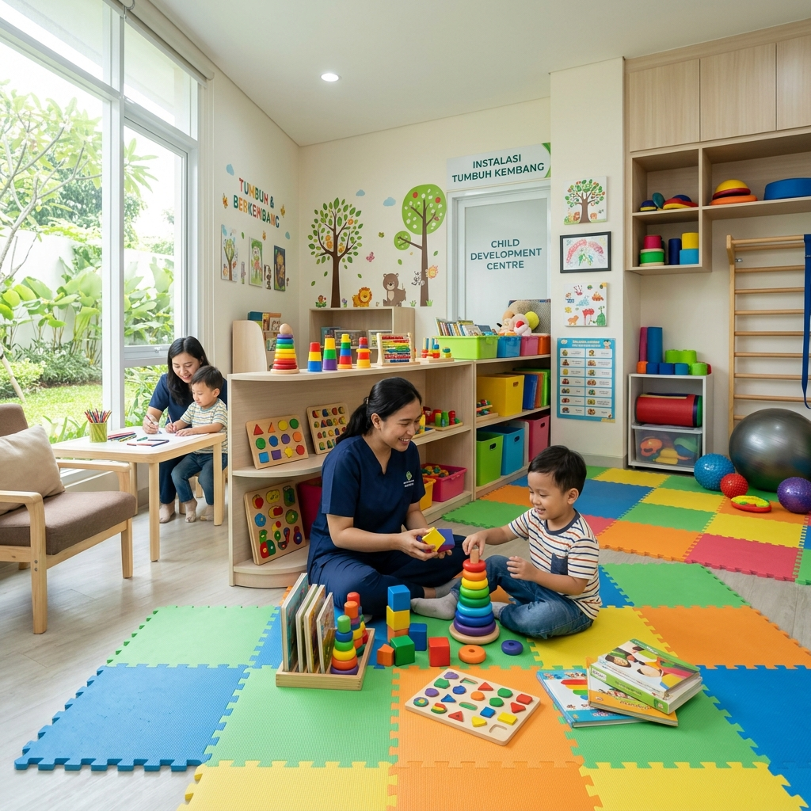

Layanan Unggulan
IGD 24 Jam
Penanganan darurat medis tercepat dengan tim ahli trauma dan peralatan pendukung hidup lanjutan.
Instalasi Tumbuh Kembang
Layanan komprehensif untuk deteksi dini, intervensi, dan terapi anak. Ditangani oleh tim ahli tumbuh kembang dan terapis profesional di lingkungan yang ramah anak.

Rawat Inap
Kamar perawatan yang dirancang untuk kenyamanan pemulihan pasien. Tersedia kelas VVIP, VIP, hingga Kelas Standar.
- hotel Fasilitas Bed Modern
- restaurant Nutrisi Pasien Terjaga
Spesialis & Subspesialis
Didukung tenaga medis spesialis berpengalaman untuk pelayanan kesehatan Anda.
Fasilitas Penunjang Medis
Kami mengintegrasikan teknologi diagnosa mutakhir untuk akurasi pengobatan yang maksimal bagi seluruh pasien.
Laboratorium
Layanan tes darah, urine, dan patologi klinik dengan hasil yang cepat dan akurat.
Radiologi
Dilengkapi CT Scan 64 Slices, Digital X-Ray, dan USG 4D terbaru.
Farmasi 24 Jam
Layanan penebusan resep obat yang terintegrasi dengan sistem rekam medis.
Rehabilitasi
Layanan fisioterapi dan pemulihan fisik oleh terapis berpengalaman.
Fasilitas Umum
Kenyamanan pendamping dan pengunjung adalah prioritas kami.

Musholla
Area ibadah yang luas dan bersih untuk ketenangan batin.

Area Parkir Luas
Gedung parkir terpadu dengan sistem keamanan 24 jam.

Kantin Sehat
Menyajikan makanan bergizi dengan standar kebersihan tinggi.

Ruang Tunggu Nyaman
Dilengkapi dengan akses Wi-Fi gratis dan pengisi daya ponsel.